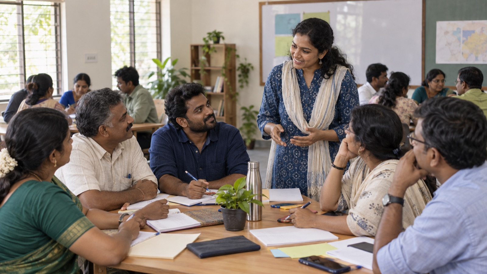
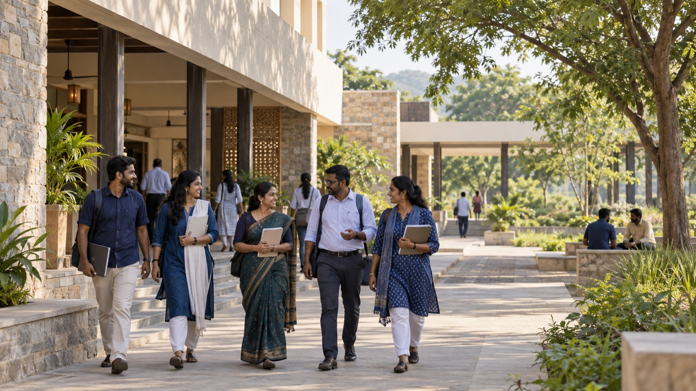

Readiness is teachable
Political capability is a set of skills that can be learned, practised and measured — not an inheritance of family, caste network or connection.
In-person public-leadership learning
The Centre brings participants together in Tamil Nadu for focused learning, field practice and peer exchange.
Learn and practise together in the room.
Training is free of charge.
NH 47 Bypass to Kulathur Road.
Through the admissions team.
Foundations
Everything taught here rests on four things: the ideologies we hold, the process concepts that structure learning, proven theories, and best practice from public-leadership schools around the world.
Key ideologies
Five convictions that decide how every programme, page and score is designed.
Political capability is a set of skills that can be learned, practised and measured — not an inheritance of family, caste network or connection.
The Ladder publishes the exact criteria for rising, so every participant can see how progress is earned.
The reasoning behind every programme is free to read. We gate bundles and cohort applications, never understanding.
Leaders are grown from wards, booths, campuses and community work — where public trust is actually built.
Work is documented and reviewed, so trust in a leader rests on evidence rather than reputation.
Process concepts
The shape of a programme, from first session to your next step.
Four phases carry a participant from shared understanding and classroom capability to field practice and verified public impact.
In the CentreThe Abdul Kalam Fellow leadership journey.
Participants examine a real decision, compare the choices and defend a course of action — the discussion method developed at Harvard’s professional schools.
In the CentreCase discussions in every cohort.
Interviews, ward mapping and team coordination are rehearsed in guided exercises, with feedback tied to observable work.
In the CentreField exercises and live practice.
An experienced leader guides a newer organiser through a real milestone, and mentoring credit is earned when the mentee progresses.
In the Centre100-Day AKF Public Problem-Solving Lab and the mentoring circle.
Fellows use a 100-day action cycle with named roles, measures, reflection and review points.
In the CentreThe 100-Day AKF Public Problem-Solving Lab.
Proven theories
Well-tested ideas from the world’s leading public-policy and politics schools, applied to Tamil Nadu’s wards and panchayats.
A public leader’s work is to create things citizens value, at a cost they accept. Every plan is tested by asking who benefits, and whether they would say so.
In the CentreWard planning and delivery.
Some problems have technical fixes; others need people to change habits and expectations. Leaders learn to tell them apart and to work with resistance.
In the CentreCoalition building and conflict de-escalation.
A leader’s message is built from three stories: the story of self, the story of us and the story of now.
In the CentrePublic communication practice.
Lasting power is built through one-to-one conversations and shared leadership, not through announcements.
In the CentreListening and community-mapping exercises.
Communities can manage shared resources well through rules they design and monitor themselves.
In the CentreThe local-government module.
Informed, well-moderated discussion produces more considered public judgement than snap opinion.
In the CentreResident conversations and case debates.
Best practices
Habits borrowed from respected institutes, evaluation labs and candidate-training programmes.
Pilot small, measure honestly and publish what you find before expanding — the discipline of randomised evaluation.
In the CentreOur first cohorts are reviewed before we grow.
Field experiments in elections have found that personal, face-to-face contact moves participation more than impersonal outreach.
In the CentreDoor-to-door listening and team training.
A few clear priorities, regular data and routine review keep public plans on track.
In the Centre30-day plans and simple dashboards.
Non-partisan candidate-training programmes have shown that structured preparation and peer networks help new candidates, especially women, step forward.
In the CentreThe 4-Week Leadership Academy.
Facilities
Every space supports the same idea: learn something, then try it.

Bright rooms for instruction, guided exercises and peer review.
A quiet place for reference reading, worksheets and toolkits between sessions.

Open, shaded space for mapping practice, team coordination and outdoor sessions.
Gallery
Select any photo to view it larger. Illustrative imagery for now — real photographs will be added as cohorts begin.
Access & support
Participants can request accommodations through the admissions team before their session, so the practical barriers are planned for, not discovered on the day.
Step-free access, seating and communication accommodations are arranged with the admissions team before you arrive.
Need-based childcare can be arranged by prior request, so caring responsibilities do not keep leaders away.
Sessions are offered in Tamil and English, so language is never the reason to stay out of public life.
Location
Dr. A.P.J. Abdul Kalam Centre for Ethics and Politics
NH 47 Bypass to Kulathur Road
Neelambur, Coimbatore
Detailed rail, bus and last-mile directions are sent with every confirmed cohort invitation.
Training itself is free. Limited need-based travel support may be requested during enrolment.
The cohort brings together emerging leaders from across Tamil Nadu to practise ward research, team building and ethical public communication.
See this programme →Visit